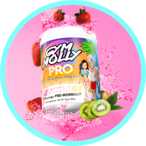

Gym molly pro is the next evolution in preworkout



Branched-Chain Amino Acids included

4x better absorbtion than the leading PreWorkout

The Most Effective form of Vitamin B (methylcobalamin)

L-Carnitine converts fat into energy

Branched-Chain Amino Acids included